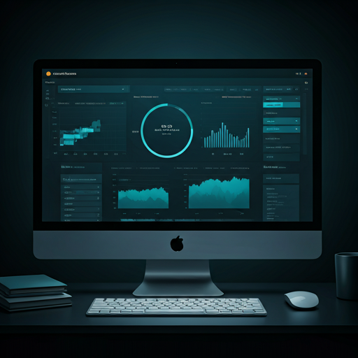

SEO técnico
Comprueba title, meta description, H1 y señales básicas que afectan a la visibilidad orgánica.
AuditPilot
SEO · RGPD · Rendimiento
AuditPilot analiza webs, detecta incidencias técnicas y convierte los datos en informes claros, accionables y listos para compartir.

Detecta oportunidades SEO, señales RGPD visibles y problemas de rendimiento sin perderte entre datos técnicos.
Comprueba title, meta description, H1 y señales básicas que afectan a la visibilidad orgánica.
Identifica políticas legales, cookies, tracking y formularios con posibles riesgos de cumplimiento.
Consulta métricas conectadas con PageSpeed para priorizar mejoras técnicas de impacto real.
AuditPilot está pensado para trabajar con proyectos, repetir auditorías y generar entregables profesionales.
Introduce una URL y recibe un diagnóstico estructurado con incidencias, puntuación global y recomendaciones.
Genera informes visuales preparados para cliente, profesor o equipo interno.
Guarda webs analizadas y consulta sus últimos resultados desde un hub centralizado.
Administra accesos con perfiles diferenciados para gestión y uso operativo de la plataforma.
Accede a AuditPilot y lanza tu primera auditoría SEO, RGPD y rendimiento.